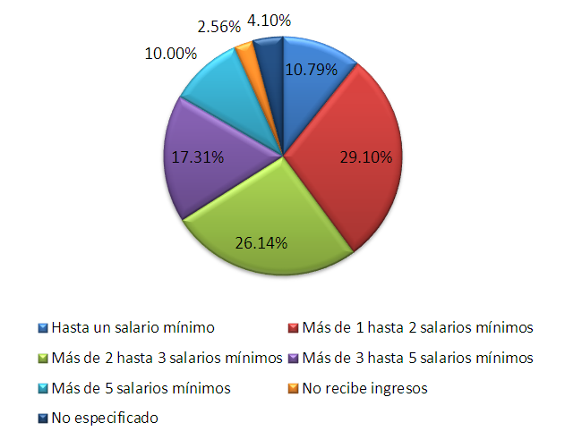
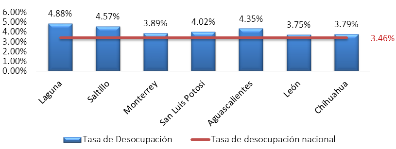

Al segundo trimestre de 2017 el área metropolitana de La Laguna, integrada por los municipios de Matamoros, Torreón, Gómez Palacio y Lerdo; registró una tasa de desempleo de 4.9%. La cifra sobrepasa la tasa nacional de 3.5%, pero es un avance desde el nivel de 5.5% en el que se encontraban la Comarca en la última encuesta inter censal de población del INEGI en 2015.
Sin embargo, para conocer mejor la realidad del mercado laboral de Torreón y su área metropolitana, es necesario analizar las condiciones del empleo, así como con características de la población ocupada y desocupada. La subocupación, la informalidad, el acceso a instituciones de salud, la duración de la jornada laboral y el sector económico para el que trabajan, son algunas de las variables que permiten conocer más sobre la calidad de los empleos de los laguneros.
En el segundo trimestre de este año la población ocupada representó 95% de la Población Económicamente Activa (PEA) de La Laguna, lo que equivale a aproximadamente 503,139 personas. En esta clasificación se encuentran tanto los empleos formales como los informales, los empleadores, subordinados y trabajadores por cuenta propia. Dentro de las características de esta población, destacan las siguientes:
El sector terciario es el principal generador de empleos de La Laguna. 69% de la población ocupada trabaja en actividades terciarias como comercio, servicios sociales, servicios profesionales y financieros, restaurantes y servicios de alojamiento, entre otros. El sector secundario es el segundo generador de empleos, con 29% del personal ocupado distribuido en industria extractiva, manufactura y construcción.
Dos terceras partes de la población ocupada gana 3 salarios mínimos o menos. La mayoría de los trabajadores se encuentra en los primeros tres rangos de salario: 11% tiene ingresos hasta de un salario mínimo; 29% entre uno y dos salarios mínimos, y; 26% gana de dos a tres salarios mínimos.
Sin embargo, comparado a nivel nacional, La Laguna tiene mejor distribución del ingreso: 10% de la población gana más de cinco salarios mínimos, cuando en México la cifra es de 5%. Además, el porcentaje de trabajadores sin ingresos en La Laguna representa la mitad del porcentaje nacional de 6%.
La Tasa de Condiciones Críticas de Ocupación (TCCO) en La Laguna es de 10%, inferior a la de México de 13%. Sin embargo, otras áreas metropolitanas como Saltillo, Chihuahua y León, tienen TCCO menores, de 4.6, 3.7 y 8.6% respectivamente.
Este indicador evalúa la relación entre el ingreso y la duración de la jornada laboral y considera en situación crítica al personal que: 1) trabaja menos de 35 horas a la semana por razones ajenas a su decisión, 2) trabaja 35 horas o más y recibe una remuneración de hasta un salario mínimo o 3) trabaja más de 48 horas a la semana y percibe ingresos de entre uno y dos salarios mínimos.
Por otro lado, 41% del personal ocupado es informal. En este grupo se clasifican las personas que laboran en el sector informal o que trabajan informalmente en establecimientos formales.
Características de la población desocupada
La población desocupada fue de 25,815 laguneros y en ella se incluyó a la población que en la semana de referencia de la encuesta buscó trabajo y no encontró. Como principales características de esta población destacan:
40% tiene educación medio superior y superior. La desocupación en La Laguna no es cuestión de preparación: aproximadamente 10,488 laguneros desocupados cuentan con educación superior. De hecho, más del 80% de la población desocupada tiene al menos la secundaria completa, mientras el 20% restante tiene primaria completa o incompleta.
Más del 90% tiene experiencia laboral. Alrededor de 23,536 habitantes se encuentran desempleadas por renunciar a su trabajo, perderlo o terminar un negocio propio. De estas opciones, la primera es la más común, pues aproximadamente 8,336 laguneros desocupados en el periodo de referencia dejaron su trabajo por decisión propia.
90% tiene hasta tres meses de ser desempleado. Más de 65% de los casos tiene menos de un mes buscando trabajo, y 25% tiene desempleado entre uno y tres meses. La cifra disminuye cuando aumenta el rango de tiempo, y se calcula que solo alrededor de 600 personas llevan más de un año sin encontrar trabajo.
Los problemas del mercado laboral de La Laguna son de calidad. Los esfuerzos públicos y privados han conseguido disminuir el porcentaje de desocupación; sin embargo, este criterio soluciona el problema sólo en el corto plazo y minimiza la importancia de las condiciones laborales y las oportunidades de los trabajadores para mejorar su calidad de vida.
Las nuevas políticas deben basarse en la vinculación universidad – empresa, el desarrollo de proveeduría local, la capacitación de técnicos y la implementación de investigación y desarrollo en los procesos productivos: variables clave para el desarrollo del mercado laboral en el mediano y largo plazo.
Distribución de la población ocupada por nivel de ingresos

Tasa de desocupación por área metropolitana al segundo trimestre de 2017

Una versión de divulgación de este análisis apareció en Milenio Laguna
Milenio - Análisis de las condiciones del empleo en La Laguna